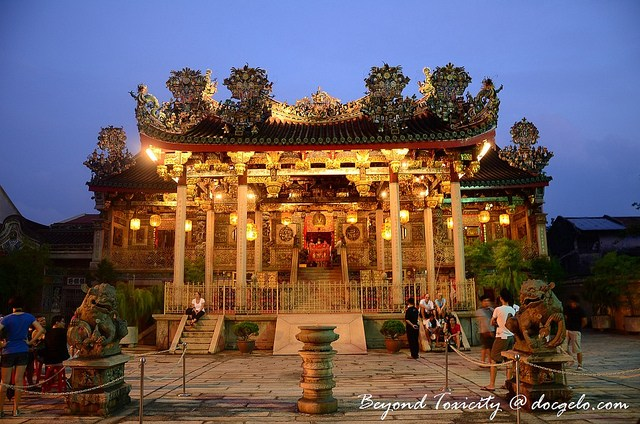

Best For Views
Penang Hill located about 6 kilometers from George Town and 833 meters above sea level, it’s the perfect spot to get a glimpse of the island and the mainland of Penang. Best to go there : the very first trip of the day of the Swiss-made funicular train from the foot of Bukit Bendera at 6:30AM. Experience the Malaysian dusk while waiting for the glorious sunrise. Savor a Penangite breakfast at the foodcourt and appreciate nocturnal-feathered artsy crafts inside The Owl Museum. Penang Hill is almost a complete community with its Post Office, Bellevue Hotel, shrines of worship (Hindu and Muslim), gardens, playground and restaurants. The roundtrip fare for funicular train is US$ 9.42.

Best For Culture
It’s a must for every heritage suckers to spend a couple of nights or more in this quaint Malaysian island. With a unique fusion of diversities from Malays, Indians and Chinese, their opulent and rich histories that are apparent in the city’s clan houses, museums and living heritage, can effortlessly fascinate even the most idle tourist. MUST VISITS are Pinang Peranakan Mansion located in 29 Lebuh Gereja or Church Street, George Town(Monday to Sunday including Public Holidays from 9:30 am to 5 pm, Admission rate: US$ 3.15). Cheong Fatt Tze Mansion also known as the Blue Mansion is both a heritage mansion and a hotel in Leith Street, George Town (Daily guided heritage tours of the house in English : 11am / 1.30pm / 3pm Admission fee US$ 3.77). Khoo Kongsi in Cannon Street, George Town (Open daily with US$ 3:15 Admission fee). Penang State Museum and Art Gallery located at Faruqar Street is also not to be missed (Admission fee of US$ 0.314).
Best For Walking
George Town, Penang’s Heritage Trail stretches from the parallels of Chulia Street include Kapitan Keling, Armenian, Cannon, Muntri , Church, Pitt, Leith Streets and many more. Clan Houses, street food stalls that are more popularly known as hawkers and restaurants to suit a wide range of budget offer Malay, Chinese, Indian and even Western cuisines, various Hindu temples, Muslim mosques, Taoist shrines and Catholic and other religious churches, art installations on walls of shophouses around George Town can be spotted randomly by foot. And when both feet and legs become sore, hopped in a traditional trishaw to upgrade the city’s sightseeing. If nature and some trekking interest you, head directly to Penang Botanic Garden, Penang Butterfly Farm or Tropical Spice Garden via taxi cab or Rapid Penang Bus where strolling under lush greens and blooms provides soothing atmosphere.
Best For Escape
For less than 10 minute Drive or 20-30 minute taxi cab or Rapid Penang Bus-ride from George Town to Batu Ferringhi , soak your feet on the sand and shoreline of Penang beaches. Hundreds of possibilities awaits you in Batu Ferringhi; there are water sports, night bazaars, hotels and spas , food, food and more food!